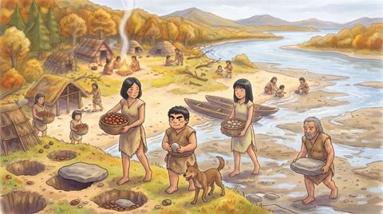
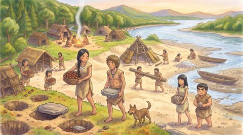
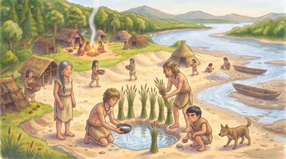

人類創世ゲーム
縄文の10人から始まった村の、年ごとの記録です。1年目から順に読めます。
 1年目 ナツユキの年夏の雪のようなクリの森を見つけ、はじめて穴に木の実をためて冬を越した
1年目 ナツユキの年夏の雪のようなクリの森を見つけ、はじめて穴に木の実をためて冬を越した
 2年目 シブニゲの年しぶい実を湧き水で食べられるようにし、けがをした父を娘が足あとで見つけた
2年目 シブニゲの年しぶい実を湧き水で食べられるようにし、けがをした父を娘が足あとで見つけた
 3年目 ハネギの年うつろな流木が流れ着き、イソが浜でひとり立ち。カシとヨシがハネギを作った
3年目 ハネギの年うつろな流木が流れ着き、イソが浜でひとり立ち。カシとヨシがハネギを作った
 4年目 ホリヤの年風の来ない穴から、掘った小屋ホリヤが生まれた。コナはトチの弟子に
4年目 ホリヤの年風の来ない穴から、掘った小屋ホリヤが生まれた。コナはトチの弟子に
 5年目 ヒカリオノの年夢の平たい石でおのをみがき、欠けないヒカリオノができた。イソは夢を打ち明けた
5年目 ヒカリオノの年夢の平たい石でおのをみがき、欠けないヒカリオノができた。イソは夢を打ち明けた
 6年目 ウルの年焦がして削った浮かぶ木「ウル」が浅瀬に浮かび、大漁の夏にミルが生まれた
6年目 ウルの年焦がして削った浮かぶ木「ウル」が浅瀬に浮かび、大漁の夏にミルが生まれた
 7年目 クモスの年強い縄で魚をすくうクモスができ、長老トチがコイシに名をつけて静かに眠った
7年目 クモスの年強い縄で魚をすくうクモスができ、長老トチがコイシに名をつけて静かに眠った
 8年目 グツの年焼いた土の器グツが一つだけでき、雪の降らない冬に蓄えの掟を変えた
8年目 グツの年焼いた土の器グツが一つだけでき、雪の降らない冬に蓄えの掟を変えた
 9年目 ツバメツチの年ツバメの巣のまねで割れないグツがそろい、豊作の秋にホムラの胸の内が知れた
9年目 ツバメツチの年ツバメの巣のまねで割れないグツがそろい、豊作の秋にホムラの胸の内が知れた
 10年目 ササリボの年浅瀬の岩で川上の人々と会い、黒い石の先をつけたササリボが飛んだ
10年目 ササリボの年浅瀬の岩で川上の人々と会い、黒い石の先をつけたササリボが飛んだ
 11年目 ユゲグサの年グツで煮た薬草が岩を渡り、せきの子が走った。ホムラとイソは二人のホリヤへ
11年目 ユゲグサの年グツで煮た薬草が岩を渡り、せきの子が走った。ホムラとイソは二人のホリヤへ
 12年目 ウミカワの年ハナの先に海の川。イソはナギに潮を習い、二つ目のウルができた
12年目 ウミカワの年ハナの先に海の川。イソはナギに潮を習い、二つ目のウルができた
 13年目 トリシマの年二そうのウルで、はじめて島へ。ツルはシイばあの薬草の袋を受けついだ
13年目 トリシマの年二そうのウルで、はじめて島へ。ツルはシイばあの薬草の袋を受けついだ
 14年目 ツキキザミの年月を刻む棒ツキキザミができた。コナはけんかのあと、森の奥の沢を見つけた
14年目 ツキキザミの年月を刻む棒ツキキザミができた。コナはけんかのあと、森の奥の沢を見つけた
 15年目 クロミネの年黒い石の取れる峰クロミネが分かった。コナはカブレギの汁で先をとめた
15年目 クロミネの年黒い石の取れる峰クロミネが分かった。コナはカブレギの汁で先をとめた
 16年目 ソヨの年大風の夜にソヨが生まれた。春のための干し貝カチガイができた
16年目 ソヨの年大風の夜にソヨが生まれた。春のための干し貝カチガイができた
 17年目 東のけむりの年土をのせた屋根オモヤネの浜の小屋ができ、東の海辺にけむりが見えた
17年目 東のけむりの年土をのせた屋根オモヤネの浜の小屋ができ、東の海辺にけむりが見えた
 18年目 流れ着いたかごの年東から流れ着いたかごの干した海草で、二年続きの不作の冬を越した
18年目 流れ着いたかごの年東から流れ着いたかごの干した海草で、二年続きの不作の冬を越した

19年目 ホエの来た年木の実の豊作の年、東の入り浜からついて来た犬ホエが、夜のネムリアナを守った
20年目 スナカゲの年北風の当たらない砂山のかげに浜のホリヤを建て、ナギとイソが十夜をすごした
21年目 シミアナと見送りの年砂山のくぼ地に飲める水を見つけ、秋の終わりに長老シイを見送ったそれぞれの年のページは、その年の終わりの形のまま残しています。